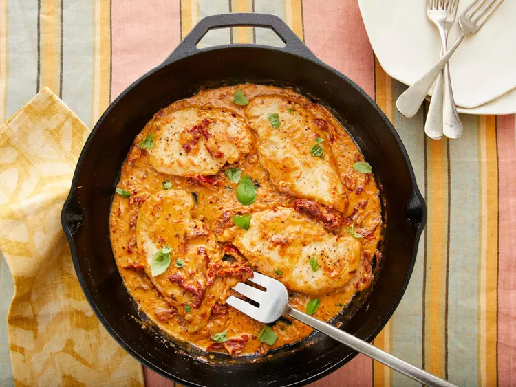

Chicken Cutlets With Sun-Dried Tomato Cream Sauce

Description: This recipe for chicken cutlets with sun-dried tomato cream sauce delivers bold, satisfying flavor and relies on items you probably have on hand.
As much as we love roasting a whole chicken or working with bone-in, skin-on chicken thighs, we also appreciate the relative ease involved with cooking cutlets. Because the chicken is thin, it doesn't take long to cook, and although the sun-dried tomato cream sauce requires a few minutes of patience as the ingredients reduce and thicken. All told, this is a cinch to put together.
Ingredients:
- 4 (3-oz.) chicken breast cutlets (about 1/2-in. thick)
- 3/4 tsp. black pepper
- 1 tsp. kosher salt, divided
- 2 Tbsp. olive oil
- 1/3 cup sun-dried tomatoes (from 1[8 1/2-oz.] jar), thinly sliced
- 1/4 cup finely chopped shallot (from 1 large [2 oz.] shallot)
- 1/2 cup dry white wine
- 1/2 cup chicken stock
- 1/2 cup heavy whipping cream
- 1 oz. Parmesan cheese, grated (about 1/4 cup)
- 1/2 tsp. crushed red pepper
- Thinly sliced fresh basil
Steps:
- Sprinkle chicken evenly with black pepper and 3/4 teaspoon of the salt. Heat oil in a large skillet over medium. Working in 2 batches, cook chicken until browned and a thermometer inserted into thickest portion of meat registers 165°F, about 2 minutes per side per batch. Transfer to a plate. Do not wipe skillet clean.
- Add sun-dried tomatoes and shallot to drippings in skillet. Cook over medium, stirring often, until fragrant, about 1 minute. Add wine and stock to skillet; cook, scraping bottom of skillet to loosen browned bits. Bring to a boil over medium-high; boil, stirring occasionally, until liquid has reduced by two-thirds, about 5 minutes.
- Reduce heat to medium. Stir in whipping cream, Parmesan, crushed red pepper, and remaining 1/4 teaspoon salt.
- Return chicken and any accumulated juices on plate to skillet. Bring to a simmer over medium. Simmer over medium, stirring and swirling skillet occasionally, until sauce thickens slightly, and chicken is heated through, about 2 minutes. Garnish with basil, and serve.